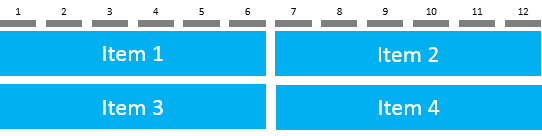

sap.ui.layout.Grid
sap.ui.layout.Grid
Overview
The sap.ui.layout.Grid is a powerful grid system that can be
configured to display a variable number of columns depending on the available screen
size. You can achieve complex but flexible layouts and line breaks for extra large,
large, medium, and small-sized screens, such as desktop, tablet, and mobile.
With this control, you can define how many items are displayed per row depending on the available screen size, with a maximum of 12. The height of a single row is always based on the content of the highest item in that row.
The flow direction of the items is horizontal only. For example, if the control is configured to display six items per row, the seventh item is displayed on the next row.
Usage
You can use the
sap.ui.layout.Grid on its own or in combination with the
sap.ui.layout.GridData. The APIs in the
sap.ui.layout.Grid apply for all grid items while with the
sap.ui.layout.GridData you can manipulate individual grid
items.
Using sap.ui.layout.Grid on its
own
defaultSpan and defaultIndent are the main two
properties that enable you to define a specific layout for the grid. The number
of grid columns is always 12 but the span and indentation of the items determine
how many are displayed in one row.
| Property | Example Values | Description |
|---|---|---|
defaultSpan |
|
Determines the span of the items for the different screen/container sizes (XL, L, M, and S). Each item can be set to span over several grid columns (from 1 to 12). |
defaultIndent |
|
Defines the number of columns with which each item is indented for the different screen/container sizes (XL, L, M, and S). Each item can be indented with several grid columns (from 0 to 11). |
More properties are available for defining the horizontal and vertical spacing between the grid items, setting a specific width, defining the position for the grid as a whole, and so on. For more information, see the available properties in the API Reference.
Using sap.ui.layout.GridData to manipulate
individual grid items
To achieve a layout where the individual grid items have a different
configuration, use sap.ui.layout.GridData.
In addition to individual span and indentation, there is a large number of properties that allow for setting the visibility of items and adding line breaks. For more information, see the available properties in the API Reference.
Examples
<l:Grid
defaultSpan="XL3 L4 M6 S12">
<Image src="/item1.png" width="100%"></Image>
<Image src="/item2.png" width="100%"></Image>
<Image src="/item3.png" width="100%"></Image>
<Image src="/item4.png" width="100%"></Image>
</l:Grid> |
XL container/screen size (one item spans over 3 columns)  L container/screen size (one item spans over 4 columns)  M container/screen size (one item spans over 6 columns) S container/screen size (one item spans over 12 columns)  |
<l:Grid defaultSpan="XL3 L4 M6 S12" defaultIndent="XL1 L1 M1 S1"> <Image src="/item1.png" width="100%"></Image> <Image src="/item2.png" width="100%"></Image> <Image src="/item3.png" width="100%"></Image> <Image src="/item4.png" width="100%"></Image> </l:Grid> |
XL container/screen size (items are indented with 1 column)  |
<l:Grid defaultSpan="XL3 L4 M6 S6"> <Image src="/item1.png" width="100%"></Image> <Image src="/item2.png" width="100%"> <layoutData> <l:GridData span="XL4"/> </layoutData> </Image> <Image src="/item3.png" width="100%"></Image> <Image src="/item4.png" width="100%"> <layoutData> <l:GridData span="XL2"/> </layoutData> </Image> </l:Grid> |
Individual span for item2 and item4 using
 |